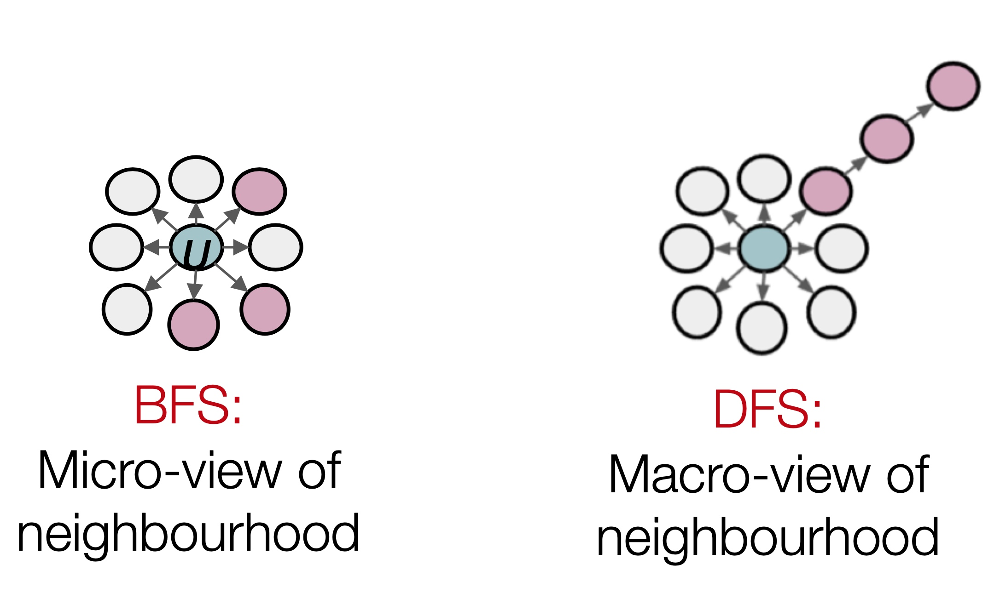

<!doctype html>
<html class="no-js" lang="en">
  <head>
    <meta charset="utf-8" />
    <meta name="viewport" content="width=device-width, initial-scale=1.0" />
    <title>
    
  graph representation learning - 
  
  </title>
 <meta name="description" content="">
 <link href="atom.xml" rel="alternate" title="" type="application/atom+xml">
    <link rel="stylesheet" href="asset/css/foundation.min.css" />
    <link rel="stylesheet" href="asset/css/docs.css" />

    <script src="asset/js/vendor/modernizr.js"></script>
    <script src="asset/js/vendor/jquery.js"></script>
    <script src="asset/highlightjs/highlight.pack.js"></script>
    <link href="asset/highlightjs/styles/github.css" media="screen, projection" rel="stylesheet" type="text/css">
    <script>hljs.initHighlightingOnLoad();</script>
    
  </head>
  <body class="antialiased hide-extras">
    
    <div class="marketing off-canvas-wrap" data-offcanvas>
      <div class="inner-wrap">


<nav class="top-bar docs-bar hide-for-small" data-topbar>

<div id="header">
    <h1><a href="index.html"></a></h1>
</div>

</nav>
        <nav class="tab-bar show-for-small">
  <a href="javascript:void(0)" class="left-off-canvas-toggle menu-icon">
    <span> &nbsp; </span>
  </a>
</nav>

<aside class="left-off-canvas-menu">
      <ul class="off-canvas-list">
      <li><a href="index.html">Home</a></li>
      
        <li class="divider"></li>
        <li><label>TensorFlow</label></li>

          
            <li><a title="TensorFlo优化" href="15744799610685.html">TensorFlo优化</a></li>
          
            <li><a title="GDG上海 2019.10.13分享内容准备" href="15673444950441.html">GDG上海 2019.10.13分享内容准备</a></li>
          
            <li><a title="Dive Into TensorFlow" href="15659603996762.html">Dive Into TensorFlow</a></li>
          
            <li><a title="Maybe Best Practice With Sparse Machine Learning In TensorFlow" href="15430699092916.html">Maybe Best Practice With Sparse Machine Learning In TensorFlow</a></li>
          

      
        <li class="divider"></li>
        <li><label>机器学习平台</label></li>

          
            <li><a title="机器学习与容器化平台" href="15861773530303.html">机器学习与容器化平台</a></li>
          
            <li><a title="机器学习工程实践" href="15648106167930.html">机器学习工程实践</a></li>
          

      
        <li class="divider"></li>
        <li><label>图计算</label></li>

          
            <li><a title="直播场景PGL落地" href="16078481811620.html">直播场景PGL落地</a></li>
          
            <li><a title="Graph Neural Networks" href="16077533959046.html">Graph Neural Networks</a></li>
          
            <li><a title="graph representation learning" href="16077533959085.html">graph representation learning</a></li>
          
            <li><a title="Spectral Clustering" href="16029890553575.html">Spectral Clustering</a></li>
          
            <li><a title="Community structure in networks" href="16019601035128.html">Community structure in networks</a></li>
          
            <li><a title="Motifs and structural roles in networks" href="16017096445579.html">Motifs and structural roles in networks</a></li>
          
            <li><a title="Snap.py Tutorial: Content" href="16016944212130.html">Snap.py Tutorial: Content</a></li>
          
            <li><a title="Properties of Networks and Random Graph Model" href="16016274752497.html">Properties of Networks and Random Graph Model</a></li>
          

      
        <li class="divider"></li>
        <li><label>pytorch</label></li>

          
            <li><a title="pytorch 环境安装及配置" href="15808187045354.html">pytorch 环境安装及配置</a></li>
          

      
      </ul>
    </aside>

<a class="exit-off-canvas" href="#"></a>

        <section id="main-content" role="main" class="scroll-container">

          <div class="row">
            <div class="large-3 medium-3 columns">
              <div class="hide-for-small">
                <div class="sidebar">
                <nav>
                  <ul id="side-nav" class="side-nav">

                    
                      <li class="side-title"><span>TensorFlow</span></li>
                        
                          <li><a title="TensorFlo优化" href="15744799610685.html">TensorFlo优化</a></li>
                        
                          <li><a title="GDG上海 2019.10.13分享内容准备" href="15673444950441.html">GDG上海 2019.10.13分享内容准备</a></li>
                        
                          <li><a title="Dive Into TensorFlow" href="15659603996762.html">Dive Into TensorFlow</a></li>
                        
                          <li><a title="Maybe Best Practice With Sparse Machine Learning In TensorFlow" href="15430699092916.html">Maybe Best Practice With Sparse Machine Learning In TensorFlow</a></li>
                        

                    
                      <li class="side-title"><span>机器学习平台</span></li>
                        
                          <li><a title="机器学习与容器化平台" href="15861773530303.html">机器学习与容器化平台</a></li>
                        
                          <li><a title="机器学习工程实践" href="15648106167930.html">机器学习工程实践</a></li>
                        

                    
                      <li class="side-title"><span>图计算</span></li>
                        
                          <li><a title="直播场景PGL落地" href="16078481811620.html">直播场景PGL落地</a></li>
                        
                          <li><a title="Graph Neural Networks" href="16077533959046.html">Graph Neural Networks</a></li>
                        
                          <li><a title="graph representation learning" href="16077533959085.html">graph representation learning</a></li>
                        
                          <li><a title="Spectral Clustering" href="16029890553575.html">Spectral Clustering</a></li>
                        
                          <li><a title="Community structure in networks" href="16019601035128.html">Community structure in networks</a></li>
                        
                          <li><a title="Motifs and structural roles in networks" href="16017096445579.html">Motifs and structural roles in networks</a></li>
                        
                          <li><a title="Snap.py Tutorial: Content" href="16016944212130.html">Snap.py Tutorial: Content</a></li>
                        
                          <li><a title="Properties of Networks and Random Graph Model" href="16016274752497.html">Properties of Networks and Random Graph Model</a></li>
                        

                    
                      <li class="side-title"><span>pytorch</span></li>
                        
                          <li><a title="pytorch 环境安装及配置" href="15808187045354.html">pytorch 环境安装及配置</a></li>
                        

                    
                  </ul>
                </nav>
                </div>
              </div>
            </div>
            <div class="large-9 medium-9 columns">

 <div class="markdown-body">
<h1>graph representation learning</h1>

<h2 id="toc_0">写在net embedding之前</h2>

<p>一个标准的机器学习流程如下：<br/>
</p>

<p>其中如何设计一套合理方式来高效地进行特征表示，是十分重要的，比如在cv与nlp任务中，我们会分别设计cnn模块与RNN模块来建模图像中像素点表征的信息、word表征的信息。</p>

<p><br/>
那么在graph中，如何进行特征表示呢 ？ Graph的特征表示极为复杂，主要表现在以下三个方面：</p>

<ul>
<li>极其复杂的拓扑结构，很难简单地像图像中的感受野来提取有效信息；</li>
<li>无特定的节点顺序；</li>
<li>通常graph会是动态变化的， 且使用多模态特征；
</li>
</ul>

<p>今天我们就来了解下如何对graph进行特征学习；</p>

<h2 id="toc_1">Embedding Nodes</h2>

<p>假设有图G，V表示节点集合，A为对应的邻接矩阵，embedding node是对图当中的节点进行有效地编码，保证相似的节点在编码也有类似的相似性，如下图：<br/>
</p>

<p>节点的向量学习分为以下三个方面：</p>

<ol>
<li>定义编码器， 即ENC(v)，将图中的节点通过周边结构关系的学习，映射到低维的向量表示，如\(Z_{v}\)，在常见的任务中，通常就是一个embedding矩阵，通过lookup拿到对应节点的向量，然后反向进行embedding向量的更新，这个即成为学习；</li>
<li>定义相似度函数sim(u,v)，即如何定义两个节点相似度的大小；</li>
<li>通过数据的学习不断来优化编码器参数，保证\(sim(u,v) = Z_{v}^{T}Z_{u}\)；</li>
</ol>

<h3 id="toc_2">Random Walk</h3>

<p>何谓&quot;随机游走&quot;？给定一个graph和一个起点，随机选择其一个邻居，并移动到这个邻居，然后继续随机选择这个点的邻居，产生随机的点序列，而点和点之间出现的概率即为\(Z_{v}^{T}Z_{u}\)<br/>
</p>

<p>Random Walk有两个特点：</p>

<ul>
<li>极具表达性： 节点相似计算的定义、随机，且包含了局部（邻居）以及高阶邻居的信息；</li>
<li>效率级高：训练时不需要穷举所有的节点对，只需要考虑随机游走中同时的对；</li>
</ul>

<h3 id="toc_3">非监督特征学习</h3>

<p>给定图G=（V， E）， 学习一种映射\(z: u-&gt;R^{d}\)，目标函数：<br/>
<br/>
其中，\(N_{R}(u)\)表明以策略R得到的节点u的邻居：</p>

<p><strong>优化</strong></p>

<ol>
<li>使用某种策略R，从图上的每个节点开始进行固定长度的较短的random walks；</li>
<li>对于每个节点u，得到其的邻居\(N_{R}(u)\);</li>
<li>根据上图中似然函数，对embedding进行优化；</li>
</ol>

<p>这里，将目标函数，修改为以下，其中\(p(v|z_{u})\)可通过softmax得到：<br/>
<br/>
但是一旦使用softmax，其复杂度变得极大，你必须计算graph当中所有的节点，其复杂度达到了\(O(|V|^2)\)，和大家十分熟悉的word2vec，我们采用Negative Sampling来近似计算：</p>

<p><strong>Negative Sampling</strong></p>

<p></p>

<p>Negative Sampling仅仅随机选择k个负样本进行归一化操作，其中\(P_V\)是所有节点的随机分布，其中k属于超参，通常有以下经验：</p>

<ul>
<li>k越大，预估有更强的鲁棒性；</li>
<li>k越大，负样本偏差会越大；</li>
<li>k通常使用5-20；</li>
</ul>

<h3 id="toc_4">Node2vec</h3>

<p>Node2vec解决的和random类似的额问题， Node2vec扩展节点u的邻居\(N_{R}(u)\)的定义，来丰富embedding的建模信息；</p>

<p><strong>Biased Walk</strong><br/>
DeepWalk选取随机游走序列中下一个节点的方式是均匀随机分布的，而node2vec通过引入两个参数p和q，其中p为返回到上一个节点的概率， q表示生成策略选择DFS或者BFS的概率， 将宽度优先搜索和深度优先搜索引入随机游走序列的生成过程。宽度优先搜索(BFS)注重临近的节点，并刻画了相对局部的一种网络表示，宽度优先中的节点一般会出现很多次，从而降低刻画中心节点的邻居节点的方差；深度优先搜索(BFS)反应了更高层面上的节点间的同质性。（即BFS能够探究图中的结构性质，而DFS则能够探究出内容上的相似性（相邻节点之间的相似性）。其中结构相似性不一定要相连接，甚至可能相距很远。<br/>
</p>

<p>得到Walks之后， Node2vec算法和DeepWalk基本类似，整体流程如下：</p>

<ul>
<li>计算随机游走的概率；</li>
<li>模型从每个节点u开始的步长为l的r次随机游走；</li>
<li>利用优化方法优化目标函数；</li>
</ul>

<h3 id="toc_5">如何使用节点的embedding？</h3>

<p>训练好的节点向量可用于很多场景：</p>

<ul>
<li>比如专栏前面文章提到的聚类、社区检测；</li>
<li>节点分类，比如根据节点embedding预测节点是否属于薅羊毛人群，新闻实体是否为fake news；</li>
<li>关系预测，比如预测用于是否与对应实体可能产生连接关系，即是否可能产生行为关系；</li>
</ul>

<h2 id="toc_6">总结</h2>

<p>本章课程，主要介绍了在graph中做node embedding的基本概念，以及常见的方法如Random Walk、Node2vec，并简要介绍了embedding的用途，视频教程中还有基于KG的Translating Embedding的应用，因为讲的过于简单，仅仅介绍TranE的三元组关系，感觉并不能理清楚其实际落地细节，所以本文不做描述，这部分相关工作建议直接阅读TranE的相关文档，比如药物中蛋白质分子的应用的等等，其实本文将是接下来各种复杂GNN的入门课程，大概所有的深度学习模型其实都在学习一种有效地特征表示，如本章内容而言，仅是入门，还有很多有意思的工作，比如是否能建模graph的dynamic的信息，行为是动态更新的，dynamic在某些场景下更能表征节点的社交行为结构化信息，另外还有包括side information的引入，都是在graph下的embedding node下很重要的工作。</p>


</div>

<br /><br />
<hr />

<div class="row clearfix">
  <div class="large-6 columns">
	<div class="text-left" style="padding:15px 0px;">
		
	        <a href="16077533959046.html"  title="Previous Post: Graph Neural Networks">&laquo; Graph Neural Networks</a>
	    
	</div>
  </div>
  <div class="large-6 columns">
	<div class="text-right" style="padding:15px 0px;">
		
	        <a href="16029890553575.html" 
	        title="Next Post: Spectral Clustering">Spectral Clustering &raquo;</a>
	    
	</div>
  </div>
</div>

<div class="row">
<div style="padding:0px 0.93em;" class="share-comments">

</div>
</div>
<script type="text/javascript">
	$(function(){
		var currentURL = '16077533959085.html';
		$('#side-nav a').each(function(){
			if($(this).attr('href') == currentURL){
				$(this).parent().addClass('active');
			}
		});
	});
</script>  
</div></div>


<div class="page-bottom">
  <div class="row">
  <hr />
  <div class="small-9 columns">
  <p class="copyright">Copyright &copy; 2015
Powered by <a target="_blank" href="http://www.mweb.im">MWeb</a>,&nbsp; 
Theme used <a target="_blank" href="http://github.com">GitHub CSS</a>.</p>
  </div>
  <div class="small-3 columns">
  <p class="copyright text-right"><a href="#header">TOP</a></p>
  </div>
   
  </div>
</div>

        </section>
      </div>
    </div>
    


<script type="text/javascript" src="https://cdnjs.cloudflare.com/ajax/libs/mathjax/2.7.7/MathJax.js?config=TeX-AMS-MML_HTMLorMML"></script>
<script type="text/x-mathjax-config">MathJax.Hub.Config({TeX: { equationNumbers: { autoNumber: "AMS" } }});</script>

  


<style type="text/css">
figure{margin: 0.4em 0;padding: 0;}
  figcaption{text-align:center;}

/* PrismJS 1.14.0
 http://prismjs.com/download.html#themes=prism&languages=markup+css+clike+javascript */
/**
 * prism.js default theme for JavaScript, CSS and HTML
 * Based on dabblet (http://dabblet.com)
 * @author Lea Verou
 */

code[class*="language-"],
pre[class*="language-"] {
    color: black;
    background: none;
    text-shadow: 0 1px white;
    font-family: Consolas, Monaco, 'Andale Mono', 'Ubuntu Mono', monospace;
    text-align: left;
    white-space: pre;
    word-spacing: normal;
    word-break: normal;
    word-wrap: normal;
    line-height: 1.5;
    
    -moz-tab-size: 4;
    -o-tab-size: 4;
    tab-size: 4;
    
    -webkit-hyphens: none;
    -moz-hyphens: none;
    -ms-hyphens: none;
    hyphens: none;
}

pre[class*="language-"]::-moz-selection, pre[class*="language-"] ::-moz-selection,
code[class*="language-"]::-moz-selection, code[class*="language-"] ::-moz-selection {
    text-shadow: none;
    background:#b3d4fc;
}

pre[class*="language-"]::selection, pre[class*="language-"] ::selection,
code[class*="language-"]::selection, code[class*="language-"] ::selection {
    text-shadow: none;
    background: #b3d4fc;
}

@media print {
    code[class*="language-"],
    pre[class*="language-"] {
        text-shadow: none;
    }
}

/* Code blocks */
pre[class*="language-"] {
    padding: 1em;
    margin: .5em 0;
    overflow: auto;
}

:not(pre) > code[class*="language-"],
pre[class*="language-"] {
    background: #F7F7F7;
}

/* Inline code */
:not(pre) > code[class*="language-"] {
    padding: .1em;
    border-radius: .3em;
    white-space: normal;
}

.token.comment,
.token.prolog,
.token.doctype,
.token.cdata {
    color: slategray;
}

.token.punctuation {
    color: #999;
}

.namespace {
    opacity: .7;
}

.token.property,
.token.tag,
.token.boolean,
.token.number,
.token.constant,
.token.symbol,
.token.deleted {
    color: #905;
}

.token.selector,
.token.attr-name,
.token.string,
.token.char,
.token.builtin,
.token.inserted {
    color: #690;
}

.token.operator,
.token.entity,
.token.url,
.language-css .token.string,
.style .token.string {
    color: #9a6e3a;
    background: hsla(0, 0%, 100%, .5);
}

.token.atrule,
.token.attr-value,
.token.keyword {
    color: #07a;
}

.token.function,
.token.class-name {
    color: #DD4A68;
}

.token.regex,
.token.important,
.token.variable {
    color: #e90;
}

.token.important,
.token.bold {
    font-weight: bold;
}
.token.italic {
    font-style: italic;
}

.token.entity {
    cursor: help;
}


pre[class*="language-"].line-numbers {
    position: relative;
    padding-left: 3.8em;
    counter-reset: linenumber;
}

pre[class*="language-"].line-numbers > code {
    position: relative;
    white-space: inherit;
}

.line-numbers .line-numbers-rows {
    position: absolute;
    pointer-events: none;
    top: 0;
    font-size: 100%;
    left: -3.8em;
    width: 3em; /* works for line-numbers below 1000 lines */
    letter-spacing: -1px;
    border-right: 1px solid #999;

    -webkit-user-select: none;
    -moz-user-select: none;
    -ms-user-select: none;
    user-select: none;

}

    .line-numbers-rows > span {
        pointer-events: none;
        display: block;
        counter-increment: linenumber;
    }

        .line-numbers-rows > span:before {
            content: counter(linenumber);
            color: #999;
            display: block;
            padding-right: 0.8em;
            text-align: right;
        }


</style>
    
    <script src="asset/js/foundation.min.js"></script>
    <script src="asset/js/foundation/foundation.offcanvas.js"></script>
    <script>
      $(document).foundation();

     
    </script>


  </body>
</html>
